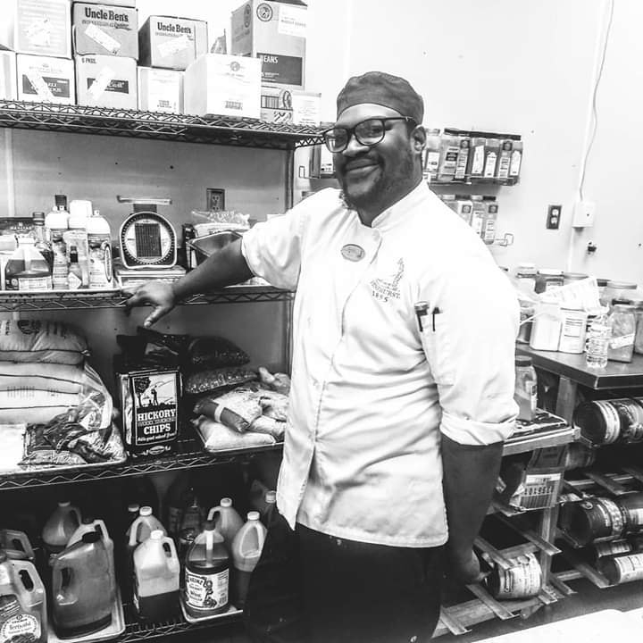

Meet the chef and creator, Samuel Blevins! These sauces were an artist creation of his own, and in collaboration with his family, came up with the name Yumsterville. With over two decades in the food industry, these are created out of love!